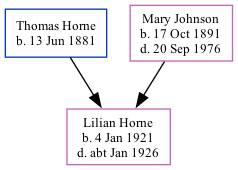

Lilian Mary Horne 1921 - c1926
[ Home ] | [ Calendar ] | [ Surnames Index ] | [ Family History ]The daughter of Thomas Horne (a postman) and Mary JohnsonLilian Horne, the second cousin once-removed on the father's side of Nigel Horne, was born in St Pancras, London, England on Jan 4, 19211,2,3. On Jun 19, 1921, she lived at 18 Derby Buildings in St Pancras1.
She died c. Jan 1926 in St Pancras3 and was buried in Camden, London, England on Jan 15, 19264.
Parents
- Thomas William was born on Jun 13, 1881
- Mary Ann was born on Oct 17, 1891
Citations
- 1921 Census Of England & Wales - Findmypast (was the daughter of the head of the household)
- England & Wales births 1837-2006 - Findmypast
- England & Wales deaths 1837-2007 - Findmypast
- https://www.deceasedonline.com/servlet/GSDOSearch?DetsView=Summary&src=ext&fileid=1792071
Media
England & Wales deaths 1837-2007 - BMD/D/1926/1/AZ/000474/060
England & Wales births 1837-2006 - BMD/B/1921/1/AZ/000714/079
1921 Census of England & Wales - GBC/1921/RG15/00743/0389/03
Family Tree
Generated by ged2site. Last updated on Nov 13, 2024